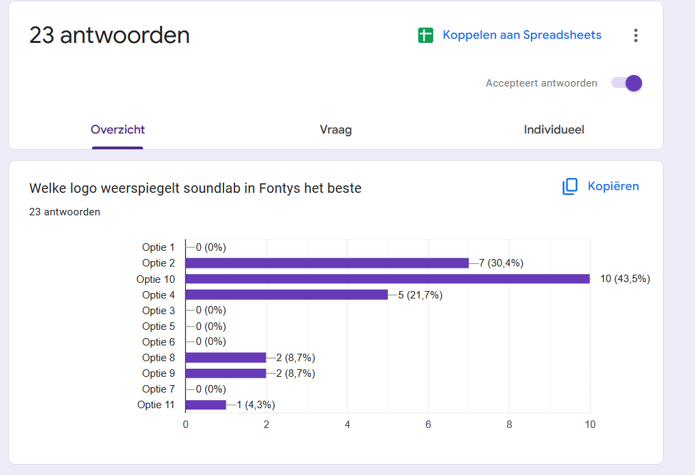
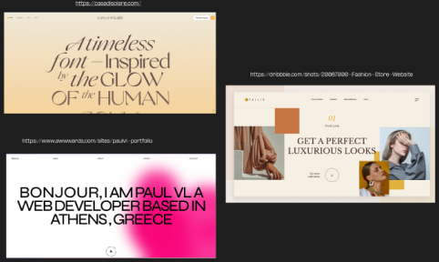
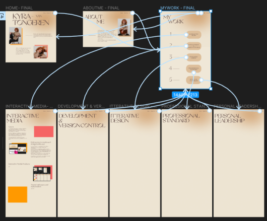

For interactive media I made two surveys with Loes. This was a step in the branding project. I picked out some logo’s and put them in a survey. Next we both went to students. I asked them which logo they thought fit the soundlab the best. I did this with around 13 people and two of the logo’s stood out on top. I mixed the logo’s and I made another survey with Loes so that our project team could pick out the best.
 For my portfolio I researched trends and got inspiration from sites like Dribbble and Awwwards. For my font I was searching something playful. When I asked for feedback Stan told me about the font Solare. The site is brown and beige and soft on the eyes. I decided on using the font for titles and the colors for the page. For the foto’s i wanted some color behind it and I wanted a blob like figure in the background. I used the current trends I saw on these sites and mixed some together for my portfolio.
I also made an interactive prototype for my portfolio. This way I can easily see what it's going to become when I'll start coding. For our third project I'll also be making a prototype in figma, This way the stakeholder can also see what the site wil do and how it will function when coded.
